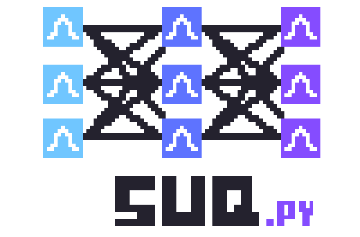
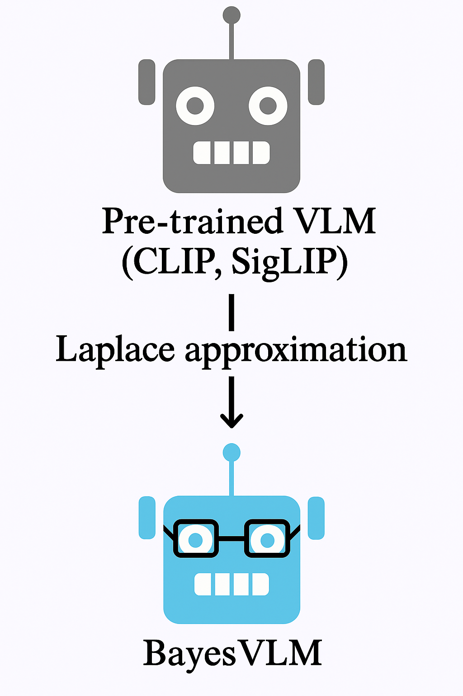
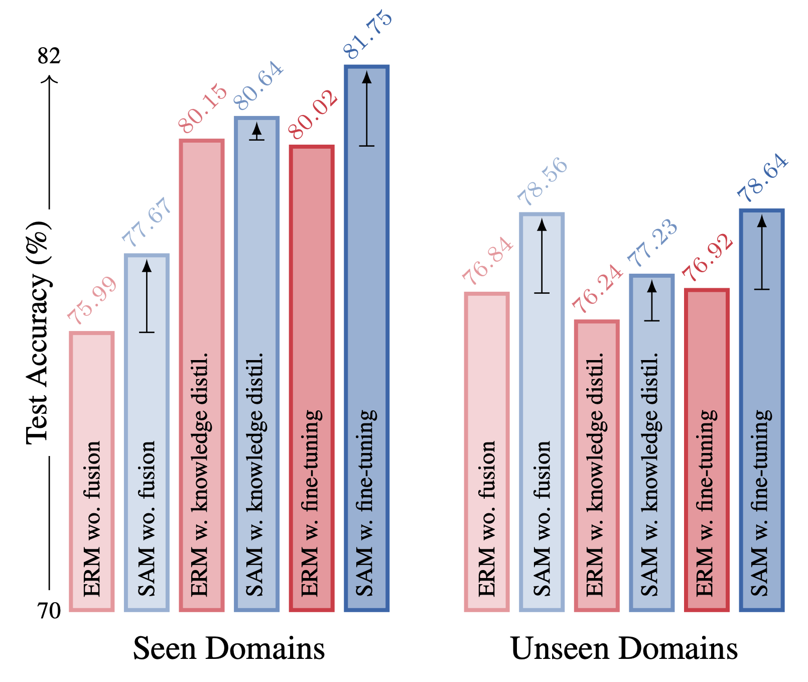

About Me
Hi, welcome. I am Rui Li, a PhD student at Aalto University, working with Arno Solin and Martin Trapp.
My research mainly focuses on uncertainty quantification and probabilistic machine learning. I'm particually interested in efficient uncertainty quantification for large scale models.
Before my PhD, I obtained my Master degree in Machine Learning from University College London and Bachelor degree in Physics from Sun Yat-sen University.
See my CV here.
Email: rui.li[at]aalto.fi
News
-
Oct 2025Started research internship at AWS, working on KV cache compression for long context LLM with Matthias Seeger.
-
Apr 2025Released the SUQ library for streamlined uncertainty quantification.
-
Jan 2025One paper accepted at ICLR 2025.
-
Oct 2024Three workshop papers accepted at NeurIPS 2024.
Selected Publications
See full list of publications here.
-
International Conference on Learning Representations (ICLR), 2025.
While estimating posterior has been actively researched in Bayesian deep learning (BDL), how to make predictions with posterior efficiently is largely overlooked. We examine streamlining prediction in BDL through a single forward pass without sampling. We showcase our approach for both MLP and transformer models, such as ViT and GPT-2.
-
Under Review.
While Vision–Language models have shown remarkable performance in various tasks, the lack of uncertainty estimation makes them unreliable in high-stakes applications. We propose a post-hoc uncertainty quantification method based on Laplace approximation, which provides useful predictive uncertainties and better calibration.
-

-
Winter Conference on Applications of Computer Vision (WACV), 2025. Oral.
In few-shot classification most efforts focus on adapting the backbone to the target domain without considering the importance of backbone training. We show that flatness-aware backbone optimisation can lead to better generalisation through theoretical and empirical results.
Notes / Blog
See technical notes and blogs here.